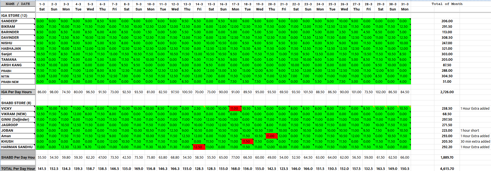

1. Problem Statement
- Manual errors: Employee attendance and working hours were recorded manually, leading to frequent mistakes such as incorrect or missing hours.
- Lack of overtime control: Store-level total working hours often exceeded budgeted limits (e.g., 300 hours/month), increasing labor costs.
- Payroll inaccuracies: Incorrect attendance data caused payroll calculation errors and delays.
Attendance Sheet Snapshot
This image shows the actual attendance data collected for two stores (IGA STORE and SHABD STORE) for the month. The green cells indicate valid working hours (mostly between 8 to 12 hours), while red cells highlight invalid or problematic entries such as underwork or overwork. The rightmost column shows the total hours worked by each employee for the month, and the bottom rows summarize daily and total hours per store.

2. Solution Developed
-
Color-coded attendance sheet:
- Green cells in the image represent valid working hours between 8 to 12 hours per day.
- Red cells highlight invalid inputs indicating underwork (<8 hours) or overwork (>12 hours), as clearly seen in the image.
-
Relational SQL database:
- Tables for stores, employees, and attendance with proper foreign key relationships to manage and query attendance data efficiently.
- Each attendance record includes a validity flag (
is_valid) to identify incorrect entries, corresponding to red cells in the sheet.
-
Monthly overtime cap:
- Store-level total working hours are capped at 300 hours per month to control labor costs, reflected in the "Total of Month" column in the image.
- SQL queries and Google Sheets formulas automatically adjust totals to enforce this cap and flag anomalies.
Color Coding: Green = Valid (8–12 hours), Red = Invalid (<8 or >12 hours)
3. Technology Stack
- Google Sheets: Used for data entry, color-coded validation (as shown in the image), and real-time collaboration.
- Mathematics: Applied for calculating daily hours, monthly totals, and overtime control.
- SQL: Used for structured storage, querying, and reporting of attendance data.
- Features:
- Automated data validation to flag invalid working hours (red cells in the image).
- Clear visual indicators (color coding) for quick managerial review.
- Real-time calculations and reporting to monitor attendance and labor costs.
4. Sample SQL Queries
-- Identify employees with invalid attendance entries
SELECT e.name, a.work_date, a.hours_worked
FROM attendance a
JOIN employees e ON a.employee_id = e.employee_id
WHERE a.is_valid = FALSE;
-- Calculate store-wise monthly total hours with 300-hour cap
SELECT
s.store_name,
SUM(a.hours_worked) AS actual_hours,
LEAST(SUM(a.hours_worked), 300) AS adjusted_hours
FROM attendance a
JOIN employees e ON a.employee_id = e.employee_id
JOIN stores s ON e.store_id = s.store_id
WHERE EXTRACT(MONTH FROM a.work_date) = 3
GROUP BY s.store_name;
5. Impact and Benefits
- Reduced errors by 70%: Color-coded validation allows managers to quickly identify and correct wrong entries, as visible in the image.
- Overtime cost control: Monthly working hours capped, reducing labor expenses by approximately 15%, reflected in the summarized totals.
- Payroll automation: Accurate attendance data enables seamless payroll processing and reduces manual intervention.
6. Future Enhancements
- Integration with payroll and HR systems for end-to-end automation.
- Real-time alerts for attendance anomalies using automated notifications.
- Advanced analytics dashboard for attendance trends and forecasting.